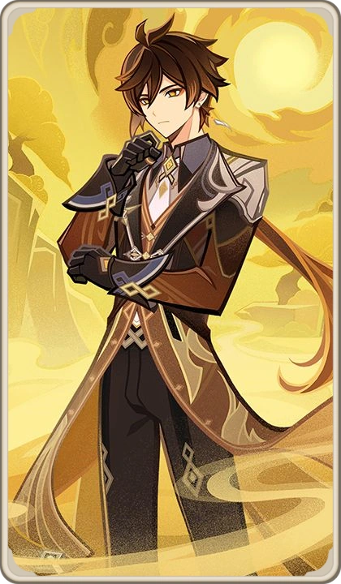

Zhongli, also known as Morax, is one of the oldest surviving gods in Teyvat, with a history spanning over 6000 years. Unlike many other deities, his origins are shrouded in mystery, but he emerged as a powerful Geo entity during the earliest eras of the world.
He witnessed the rise and fall of countless civilizations, long before the establishment of the Seven Archons. His immense age gives him a unique perspective on time, change, and mortality.
During the Archon War, Morax was one of the strongest contenders. He fought numerous gods and defeated powerful enemies to secure his place as the Geo Archon.
He forged alliances with adepti such as Xiao and Cloud Retainer, creating a powerful force that would later shape Liyue.
Unlike many gods, Morax valued order and contracts, not chaos or domination.
Morax was not merely a survivor of the Archon War—he was one of its most dominant forces. While many gods struggled to endure the chaos, Morax overwhelmed his enemies with absolute power.
It is said that he pinned rival gods beneath the ocean floor as if they were nothing, sealing them away beneath stone and sea.
The battlefield of Liyue was drenched in blood during these conflicts, as Morax fought relentlessly to secure a future for his people.
After the war, Morax established Liyue Harbor, one of the most prosperous nations in Teyvat.
He ruled through contracts, believing that agreements and trust should govern human society rather than divine authority alone.
The concept of contracts became the foundation of Liyue’s culture.
Every battle he fought and every god he defeated was done with one purpose: to protect Liyue and ensure its survival in a world ruled by chaos.
His rule was not born from ambition, but from responsibility— a contract to safeguard his land and its people at any cost.
Morax worked alongside adepti and Yakshas to protect Liyue from demons and lingering remnants of defeated gods.
Many Yakshas fell due to karmic debt, leaving only Xiao as the last survivor.
This period highlights Morax’s burden as a god who watched his allies suffer over time.
Zhongli believes contracts define existence itself. To him, breaking a contract is equivalent to destroying trust and order.
This philosophy shaped Liyue’s governance and its independence from divine rule.
After thousands of years of rule, Morax chose to step down.
He staged his own “death” during the Rite of Descension, giving up his Gnosis and allowing humans to govern themselves.
This marked a major turning point—not just for Liyue, but for the concept of Archons in Teyvat.
Now living as Zhongli, he walks among mortals, observing the world he once ruled.
He continues to value contracts and traditions, but now seeks to understand humanity from a different perspective.
⭐ Rarity: 5★
⚔️ Weapon: Polearm
🌍 Element: Geo
🧬 Constellation: Lapis Dei
🏷️ Real Name: Morax
🏛️ Category: Archon / God
🎭 Role: Shield Support / Burst DPS
Zhongli provides the strongest shield in the game and reduces enemy resistance. His playstyle revolves around survivability and burst damage.
Skill: Creates a strong Geo shield
Burst: Summons meteor dealing massive Geo damage